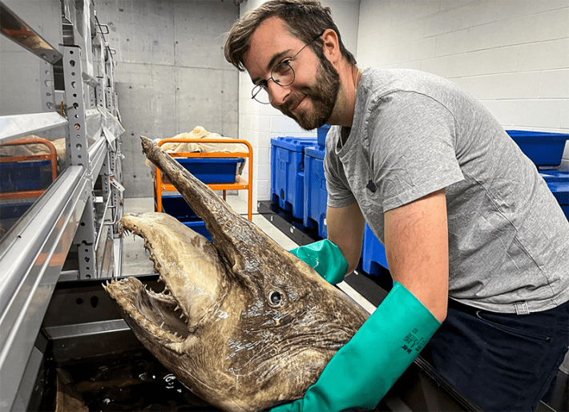
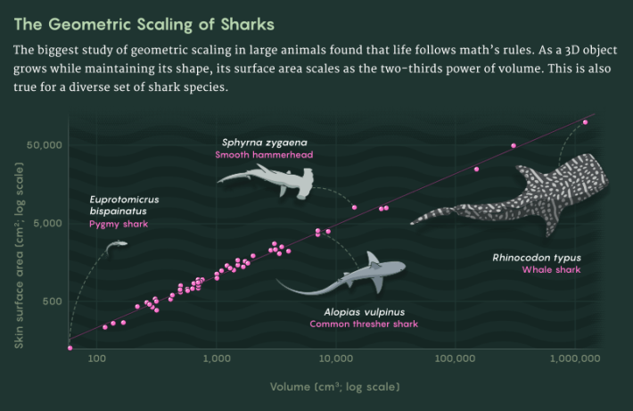
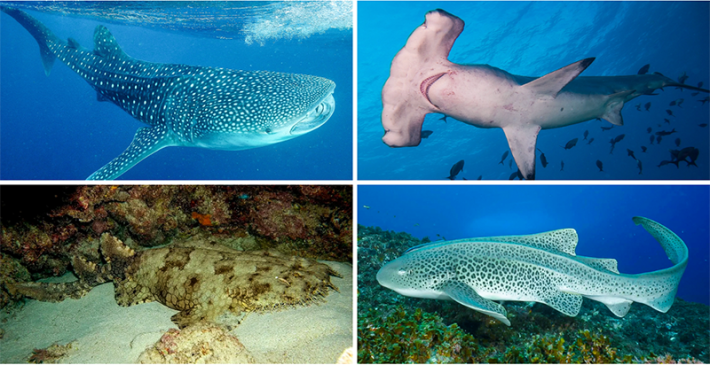

It’s a universal fact that as any 3-D object, from a Platonic sphere to a cell to an elephant, grows outward in all directions, its total surface area will increase more slowly than the space it occupies (its volume). If the object’s geometry and shape remain the same as it gets bigger, then its surface area will increase roughly as fast as its volume to the two-thirds power. For centuries, biologists have wondered if life forms, too, follow this two-thirds scaling law, even though they come in a stunning variety of shapes and sizes. If so, it would suggest that there are underlying constraints fundamental to evolution that might influence how life interacts with the world around it.
Recently, researchers used CT scans and digital tools to calculate the surface areas and volumes of an ancient and diverse animal lineage: sharks. The team’s analysis, published in Royal Society Open Science, included more than 50 shark species and provides some of the best empirical evidence to date for some kind of firm scaling rule in zoology. As with a sphere, the surface area and body mass of sharks do indeed follow a two-thirds scaling law, the team found. If this holds true in other animal groups, it probably reflects underlying rules of heat exchange, metabolism or development that constrain evolution.
If you’re looking for an animal group in which to study biological scaling, it’s hard to do better than sharks, according to Joel Gayford, a shark biologist at James Cook University in Australia who led the new study. They share an overall form, but come in many sizes, occupy a plethora of niches, and have huge variations in body shape. In his research into sharks’ morphological evolution, Gayford noticed what appeared to be scaling relationships between their body parts, such as the sizes of their fins. It made him wonder whether there might be more fundamental rules constraining the forms that sharks can take.
However, he could find little high-quality research into scaling in large animals. Research in single cells has uncovered many deviations from expected rules; rare studies in smaller animals such as insects and snakes have found some evidence for two-thirds scaling. But few studies included larger animals, and most of those were conducted decades ago. Plus, Gayford found that existing animal scaling data was somewhat messy. Due to technological limitations in the 19th and 20th centuries, attempts to accurately measure animals’ surface area and volume were “error-prone and also kind of ethically questionable,” he said.

SHARK SCALING: Joel Gayford (pictured with a goblin shark) created 3-D models of more than 50 shark species of various sizes and shapes to find out if they scale geometrically. Credit: Dr. Yi-Kai Tea.
He wasn’t the only one who thought so. “One of the big limitations—especially if you read these early biology studies—is, like, how do you measure the surface area of a cow?” said Brian Enquist, an evolutionary biologist at the University of Arizona who was not involved in the study.
Until recently, options were limited. Researchers could run a measuring wheel across an animal’s hide and mark out units in chalk, or skin the creature and measure its surface area by hand. To calculate its volume, they could drop the animal into a water-filled tub and see how much liquid it displaced; some went one step further and poured water directly into freshly liberated pelts.
Gayford’s team had significantly more advanced technology available. They measured the surface area and volume of 54 different shark species, ranging from a 9-inch pygmy shark, one of the world’s smallest, to a whale shark, the largest living fish. But rather than skinning them, they took CT scans of high-quality museum specimens to create detailed virtual reconstructions. For those species too large to fit in a CT scanner, they used photogrammetry software, which stitches together many photos of an object’s surface to create a 3-D model. (In one case, the object in question was a 37-foot-long whale shark that lives at the Georgia Aquarium.) They then loaded the models into 3-D processing software called Blender, which was originally developed for rendering objects in video games. To calculate a shark’s surface area, Gayford just had to click a button.

Mark Belan / Quanta Magazine; Source: Joel Harrison Gayford
In addition to reflecting a huge range of animal sizes, the dataset also represented sharks that fill a variety of ecological niches, from reef dwellers to bottom feeders to open-ocean predators. They came in “a ton of different unique morphologies,” Gayford said, including several oblong-faced hammerhead species; the common thresher, whose tail fin is nearly as long as the rest of its body; and the flat and frilly wobbegong, along with your more standard shark-shaped sharks. And while most sharks are cold-blooded, or ectothermic, a few species (including great whites) can generate their own heat. Gayford’s team included one of these regionally endothermic sharks—the thresher—in the dataset.
Despite this diversity of size, shape, lifestyle, and metabolism, the sharks fit the two-thirds scaling rule almost perfectly. “They showed there’s not a lot of variability in it, so that’s really cool,” Enquist said.
The analysis suggests that this two-thirds scaling rule could be universal for animals. To be certain, more research is needed in other animal groups—including terrestrial animals, which can have complex external geometries such as feathers and hair, and warm-blooded, or endothermic, animals such as mammals and birds. To that end, Gayford’s team is collecting more data; he hopes other researchers will further test biological scaling in the animals they study.

SHARKS!: Sharks are an incredibly old and diverse group of species, encompassing many sizes, shapes, habitats, and lifestyles, including (clockwise from top left) the whale shark, scalloped hammerhead, zebra shark, and tassled wobbegong. Credit: Clockwise from top left: Guillen Photo; Kris Mikael Krister; Simon Pierce; Leonard Low.
However, the surface area measurements could still be considered incomplete because they only include the sharks’ external features. Even though structures such as gills are tucked away inside animals’ bodies, their surfaces are actually external from a topological perspective, said Karl Niklas, an emeritus professor of biomechanics at Cornell University. If the researchers had analyzed the sharks’ gills as well, Niklas speculated that they would have found a scaling ratio closer to three-fourths. Still, the consistency of the numbers across many different shark species suggests the rule is not incidental. “We’ve got to think of this as some kind of reflection of adaptive evolution,” Niklas said.
The scientists aren’t certain what fundamental mechanisms could be limiting sharks and other animals’ sizes and shapes, but they have hypotheses. One involves tissue allocation during early growth. To visualize this, imagine a developing animal as a ball of clay. “There’s only so many ways you can stretch out the clay to make different shapes without incurring energetic costs,” Gayford said. In that case, the scaling relationship is significant to the embryo, and it goes on to limit the potential forms the adult organism can take.
Alternatively, the ratio could reflect a fundamental constraint on heat exchange. In animals, which can absorb external heat and generate it through metabolism or movement, a scaling principle in which surface area grows more slowly than volume would create an insulating effect as you move from small species to larger ones. “Surface area to volume is really important for heat exchange,” said Van Savage, a computational biologist at the University of California, Los Angeles who was not involved in the study. This may explain why Arctic species tend to be large and bulky, while those living in tropical climates can be svelte: A bigger body is harder to cool down than a smaller one. This applies even to ectothermic animals, which may need to hold on to heat as they move between warm and cool environments—for example, when whale sharks dive into deeper, colder water.
The study offers insight into the mathematical limits of evolution, and could help identify fundamental mechanisms that limit life’s topology. But calculating how organisms scale has practical value as well. It can help veterinarians figure out how much anesthesia to administer to a cat versus a Great Dane, for example, or help doctors determine drug dosages for infants versus adults.
For Gayford, it highlights the need for continued empirical studies of biological scaling. “It’s really important that people actually test these laws,” he said. “Because often they’re just kind of assumed to be correct.”
This article was originally published onQuanta.
Lead image: Samantha Mash for Quanta Magazine